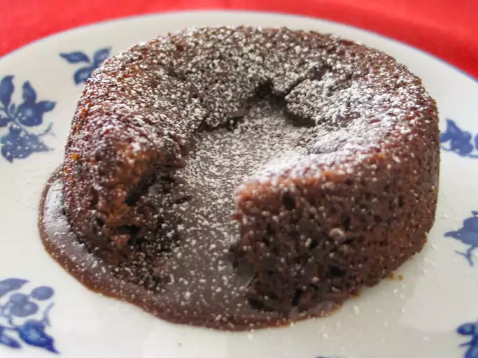

Molten Chocolate Cakes

Description
his dessert features a cakey exterior that houses a decadent center of flowing, warm dark chocolate.
Ingredients
- 1 cup unsalted butter
- 8 ounces semisweet chocolate chips, or bars, cut into bite-size chunks
- 5 large eggs
- ½ cup sugar
- Pinch of salt
- 4 teaspoons flour
- cooking spray
- raspberries or any other garnish
Steps
- Melt butter and chocolate in a medium heat-proof bowl over a saucepan of simmering water; remove from heat. Beat eggs, sugar, and salt with a hand mixer in a medium bowl until sugar dissolves. Beat egg mixture into chocolate until smooth. Beat in flour until just combined. (Batter can be made a day ahead; return to room temperature an hour or so before baking.)
- Adjust the oven rack to the middle position; preheat the oven to 450 degrees (230 degrees C).
- Line a standard-size muffin tin (1/2 cup capacity) with 8 extra-large muffin papers (papers should extend above cups to facilitate removal). Spray muffin papers with cooking spray. Divide batter among muffin cups.
- Bake until batter puffs but the center is not set, 8 to 10 minutes. Carefully lift cakes from the tin and set on a work surface. Pull papers away from cakes and transfer cakes to dessert plates.
- Make garnish: Roll slightly dampened raspberries or preferred garnish in sugar.
- Top each cake with sugared raspberries and serve immediately.
Go Back